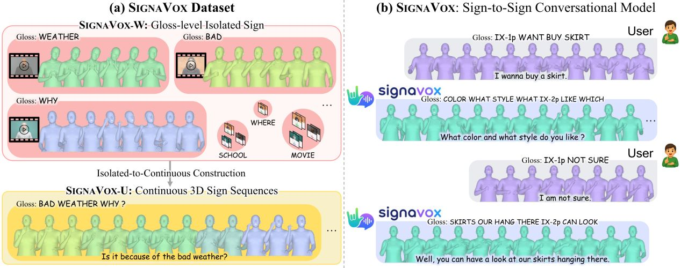
SIGNAVOX is a framework that turns isolated sign clips into continuous 3D sign-language conversations and trains a model to generate sign responses directly from prior signing context, without relying on text at inference time.
Ph.D. Student · Yonsei University
Hello! 👋 I'm a Ph.D. student at MICV Lab at Yonsei University (Prof. Seong Jae Hwang). I'm currently interested in mechanistic interpretability, vision models, cognitive science, and a little bit of medical imaging!
Currently, my primary research interest lies in Mechanistic Interpretability (MI). By leveraging MI, we can understand what capabilities an AI model specializes in and what capabilities it requires. I believe that this deep understanding of AI models will ultimately serve as a major foundation for advancing towards Artificial General Intelligence (AGI).
* equal contribution

SIGNAVOX is a framework that turns isolated sign clips into continuous 3D sign-language conversations and trains a model to generate sign responses directly from prior signing context, without relying on text at inference time.
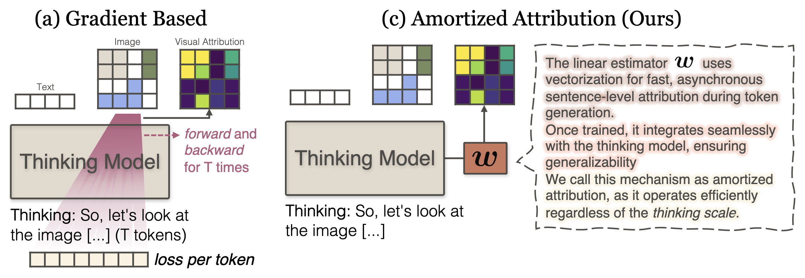
vSTREAM enables real-time, faithful visual attribution streaming in multimodal reasoning models by amortizing causal effect estimation from attention features.
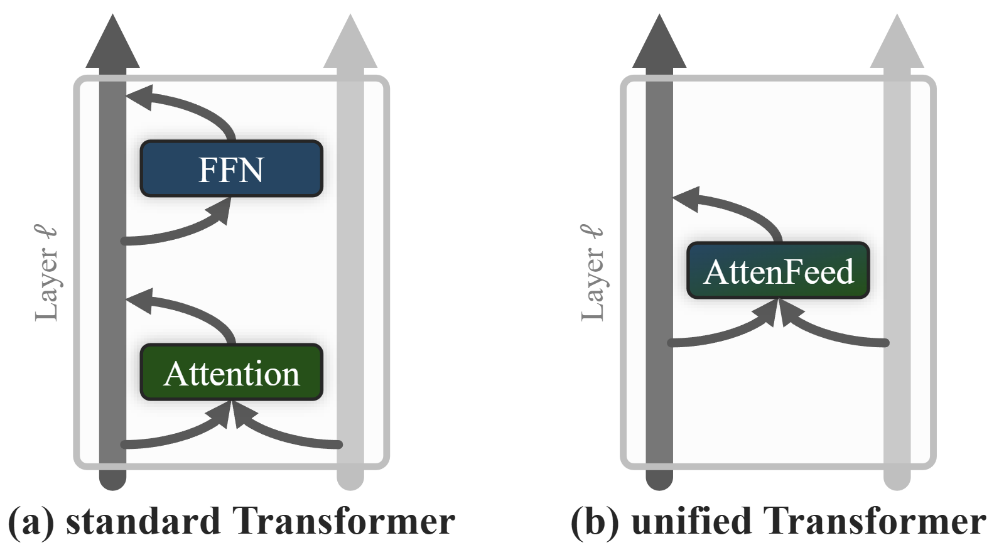
AttenFeed unifies Attention and FFN into a single module. Building a ViT entirely from it (uViT) reveals that the rigid Attention–FFN split of standard ViTs is an inductive bias that hinders learning at smaller model scales.
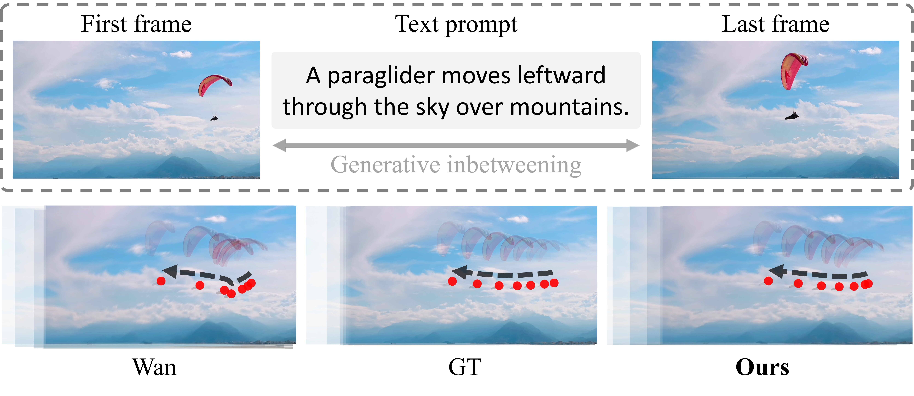
Two training-free approaches, Keyframe-anchored Attention Bias (KAB) and Rescaled Temporal RoPE (ReTRo), significantly enhances semantic fidelity, frame consistency, and pace stability in text-conditioned generative inbetweening.
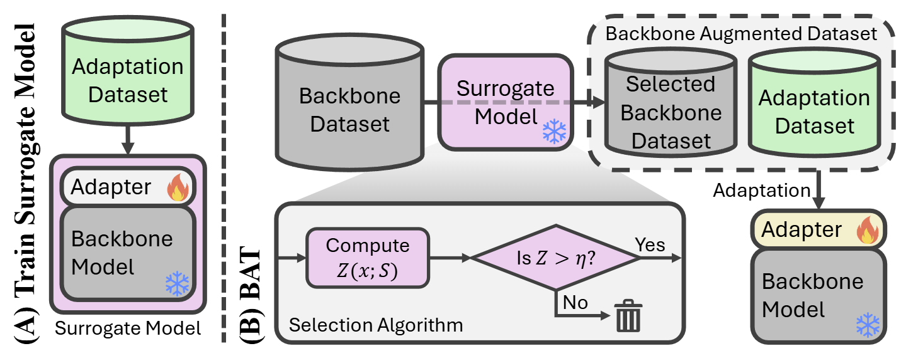
To solve the problem of scarce adaptation data, the pre-training data of the backbone model can be selectively utilized to augment the adaptation dataset.
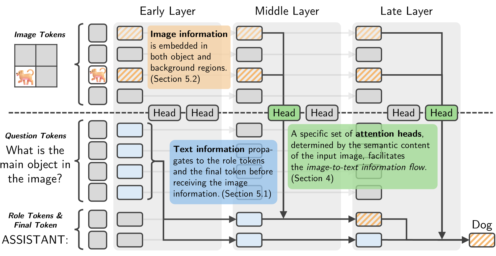
The image-to-text transfer in LVLMs depends on specialized attention head groups that are determined by the semantic content of the image.
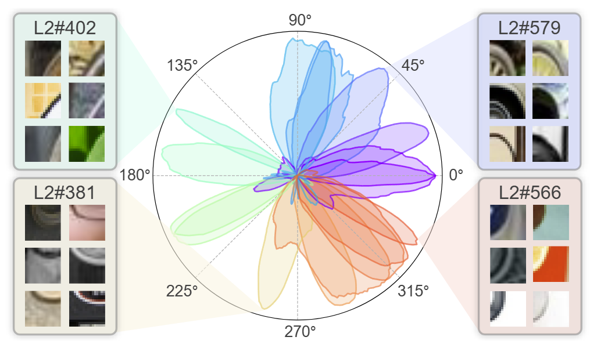
Residual replacement model explains end-to-end decision-making process of vision transformers in human-understandable scale.
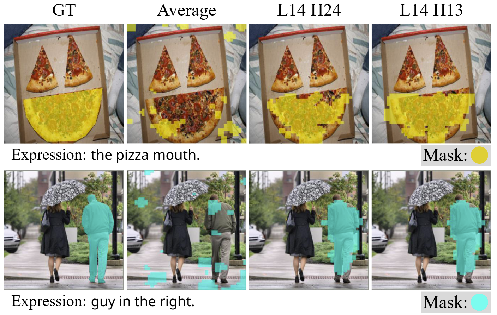
A few attention heads in frozen LVLMs demonstrate strong visual grounding capabilities. These "localization heads" immediately enable training-free detection and segmentation.
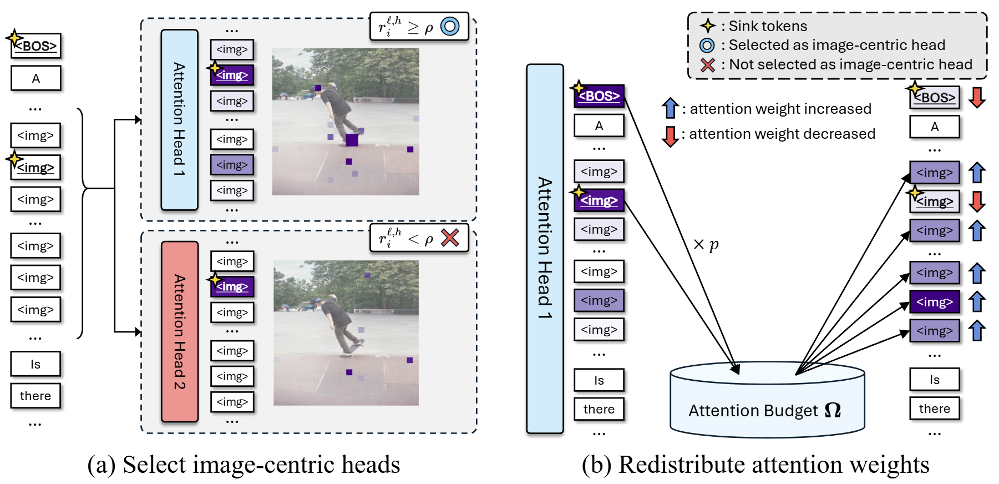
Large multimodal models consistently see irrelevant parts of the input. Our work demystifies this phenomenon, dubbed "visual attention sink," and proposes a simple mitigation strategy.

WoLF is a novel Large Language Model framework for Chest X-ray understanding that integrates patient Electronic Health Records (EHR).
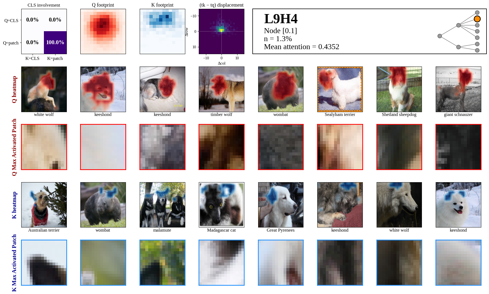
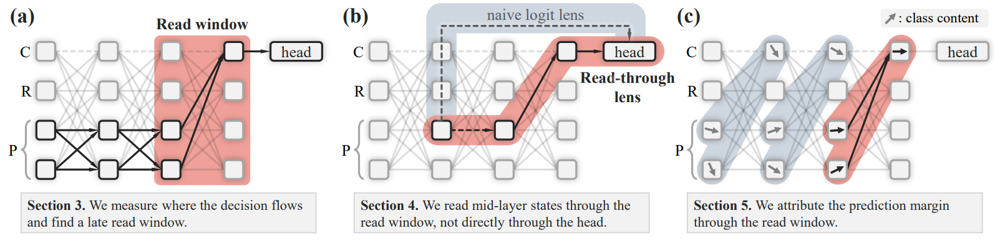
Nothing here yet. Stay tuned!
I am currently the student leader of the MICV lab!
Need another Junhyeok Kim? He's just one click away! (He is my mate as well as my namesake.)
I'm the drummer at the MICCAI 2025 Gala Dinner!